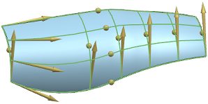
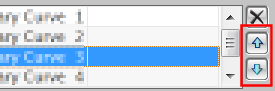
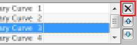

通过曲线网格曲面的截面选择
主曲线和交叉曲线必须沿着一个方向选择并且其方向要相同，如图所示。

您可以使用反向  来修改曲线的方向。
来修改曲线的方向。
您可以使用指定原始曲线  来改变封闭线串的起始曲线。
来改变封闭线串的起始曲线。
每条曲线上的箭头表示曲线的方向，箭头的起始点位于原始曲线的起始位置。
对主曲线和交叉曲线可以含有的曲线数量没有限制。
要沿主曲线封闭通过曲线网格，可以将第一条交叉曲线选择为最后一条交叉曲线。
主曲线和交叉曲线组都有一个列表来显示当前曲线的顺序。
可以使用向上移动和向下移动来改变线串的顺序。

如果错选了曲线，可以在列表中选择该线串并使用 shift-选择在图形窗口中取消选择不想要的曲线。您也可以使用移除按钮来删除所选曲线。

添加新集  将告诉 NX 下一次选择的将是新的曲线。
将告诉 NX 下一次选择的将是新的曲线。